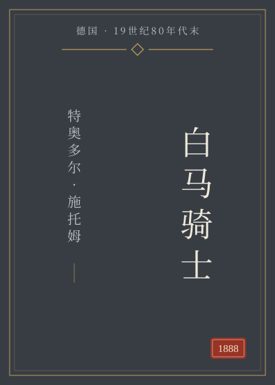
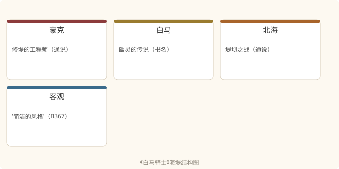

白马骑士
一、基本信息
| 作者 | 特奥多尔·施托姆 |
|---|---|
| 成书/出版 | 1888年（Britannica B367：Der Schimmelreiter (1888)——'his last and greatest novella'） Theodor Woldsen Storm — Encyclopaedia Britannica（百科全书） |
| 国别/地区 | 德国 |
| 时代 | 近代 · 19世纪80年代末 |
| 体裁 | 中篇小说 |
| 语言 | 德语 |

《白马骑士》海堤结构图（主题·结构图）
二、创作背景
Britannica（B367）：'his last and greatest novella'——'its forceful hero and terse, objective style'——'vivid imagination and great narrative verve'。
Britannica（B367）：1888年4月刊于 Deutsche Rundschau——作家卒前最后作品。
题材（通说待核）：北海堤防工程师豪克·海恩——白马上骑者的传说与堤坝之战。
三、内容脉络
（通说待核）豪克修堤的'野心'与村人的敌意。
（通说待核）'白马骑士'幽灵传说与最后的堤决。
四、主要人物表
| 人物 | 身份 | 说明 |
|---|---|---|
| 豪克·海恩 | 堤长 | （通说待核，B367未载） |
| 白马 | 幽灵坐骑 | （书名意象——通说待核） |
五、主题与艺术特点
- 人与海的工程之战（通说待核）。
- 传说与写实的双重奏（书名语境——通说待核）。
- '客观简洁'的风格（B367：terse, objective style）。
六、影响与评论
- Britannica：'last and greatest novella'（B367）。
Theodor Woldsen Storm — Encyclopaedia Britannica（百科全书） - Britannica：'great narrative verve'（B367）。
Theodor Woldsen Storm — Encyclopaedia Britannica（百科全书）
七、阅读建议
难点
- 北海堤防工程史。
- 幽灵传说的叙事层。
- 《白马骑士》中译名（《骑白马的人》两说——通说待核）。
- 德文原版（公有领域）。
施托姆收官之作；与《茵梦湖》对读。
八、待核实
- 豪克·海恩人名核对（B367未载）。
- 1888年4月刊期核对（B367已载）。
- '幽灵'结尾细节待核。